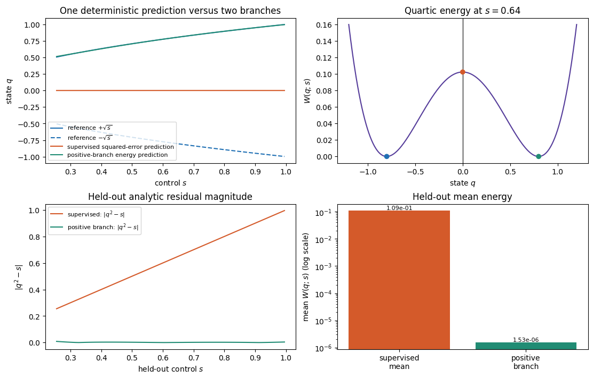

1.2.1. Why average predictions can fail#
Learning objective. Use a scalar quartic-energy model to compare balanced supervised learning with an explicitly selected positive energy branch, and explain the role of stationary points in optimisation.
Predict first. For equally likely targets \(+\sqrt{s}\) and \(-\sqrt{s}\) at the same control \(s\), predict the best single squared-error prediction. Then predict whether \(q=0\) must have a useful energy gradient whenever its residual is nonzero.
Follow the worked calculation, then use the downloadable notebook to explore the exercises.
Download practice notebook · Download with worked solutions · Environment setup
We begin with a scalar energy model implemented in PyTorch. For a control value \(s\in[0.25,1]\), define
Each \(s>0\) has two zero-energy reference branches, \(q_+(s)=+\sqrt{s}\) and \(q_-(s)=-\sqrt{s}\). We compare two objectives:
a supervised squared-error model trained on balanced samples from both branches, whose conditional target mean is near \(q=0\);
a residual/energy-trained model with an explicit positive branch selection, \(q=\operatorname{softplus}(a)>0\).
The scalar model isolates three choices: the distribution of targets, the training objective, and the branch represented by the model. The positive-output model represents a single branch of this algebraic problem.
{'scope': 'original scalar quartic-energy model with supervised and positive-branch energy objectives', 'torch': '2.8.0', 'device': 'cpu', 'dtype': 'torch.float64', 'threads': 1}
1.2.1.1. Balanced supervision versus an energy objective#
The training inputs are repeated so that every \(s\) has one positive and one negative target. Under squared error, the best single deterministic prediction is their conditional mean, \(0\). That point is between the two reference branches and has nonzero residual \(q^2-s=-s\).
s_unique = torch.linspace(0.25, 1.00, 96, dtype=dtype).unsqueeze(1)
branch_positive = torch.sqrt(s_unique)
branch_negative = -branch_positive
s_supervised = s_unique.repeat_interleave(2, dim=0)
q_supervised_target = torch.stack(
(branch_positive.squeeze(1), branch_negative.squeeze(1)), dim=1
).reshape(-1, 1)
s_heldout = torch.linspace(0.255, 0.995, 73, dtype=dtype).unsqueeze(1)
def residual(q, s):
return q.square() - s
def energy(q, s):
return residual(q, s).square() / 4.0
class TinyScalarMLP(nn.Module):
def __init__(self, positive_branch=False):
super().__init__()
self.hidden = nn.Sequential(
nn.Linear(1, 16),
nn.Tanh(),
nn.Linear(16, 16),
nn.Tanh(),
nn.Linear(16, 1),
)
self.positive_branch = positive_branch
def forward(self, s):
raw = self.hidden(s)
return F.softplus(raw) + 1.0e-8 if self.positive_branch else raw
print({
"unique_s_train": int(s_unique.shape[0]),
"balanced_supervised_pairs": int(s_supervised.shape[0]),
"heldout_s": int(s_heldout.shape[0]),
"reference_branches_per_s": 2,
})
{'unique_s_train': 96, 'balanced_supervised_pairs': 192, 'heldout_s': 73, 'reference_branches_per_s': 2}
torch.manual_seed(20260909)
supervised_model = TinyScalarMLP().to(dtype=dtype)
supervised_optimiser = torch.optim.Adam(supervised_model.parameters(), lr=2.0e-2)
supervised_start = time.perf_counter()
for _ in range(800):
supervised_optimiser.zero_grad(set_to_none=True)
supervised_loss = torch.mean(
(supervised_model(s_supervised) - q_supervised_target).square()
)
supervised_loss.backward()
supervised_optimiser.step()
supervised_seconds = time.perf_counter() - supervised_start
torch.manual_seed(20260910)
positive_model = TinyScalarMLP(positive_branch=True).to(dtype=dtype)
positive_optimiser = torch.optim.Adam(positive_model.parameters(), lr=2.0e-2)
positive_start = time.perf_counter()
for _ in range(1000):
positive_optimiser.zero_grad(set_to_none=True)
positive_loss = energy(positive_model(s_unique), s_unique).mean()
positive_loss.backward()
positive_optimiser.step()
positive_seconds = time.perf_counter() - positive_start
print({
"supervised_mse_on_balanced_targets": float(supervised_loss.detach()),
"energy_loss_positive_branch": float(positive_loss.detach()),
"supervised_training_seconds": round(supervised_seconds, 4),
"positive_branch_training_seconds": round(positive_seconds, 4),
})
{'supervised_mse_on_balanced_targets': 0.6250000049495941, 'energy_loss_positive_branch': 1.6824936103105914e-06, 'supervised_training_seconds': 0.2126, 'positive_branch_training_seconds': 0.2239}
1.2.1.2. Stationary points and reference branches#
The energy derivative is
Thus \(q=0\) has zero energy gradient, a residual of \(-s\) and positive energy when \(s>0\). The next cell evaluates that fact directly. The energy model starts on the positive branch through its softplus output. This explicit branch selection determines which solution it learns.
s_stationary = torch.tensor(0.64, dtype=dtype)
q_stationary = torch.tensor(0.0, dtype=dtype, requires_grad=True)
W_stationary = energy(q_stationary, s_stationary)
(grad_stationary,) = torch.autograd.grad(W_stationary, q_stationary)
r_stationary = residual(q_stationary.detach(), s_stationary)
print({
"s": float(s_stationary),
"W_at_q0": float(W_stationary.detach()),
"residual_at_q0": float(r_stationary),
"dW_dq_at_q0": float(grad_stationary),
})
assert abs(float(grad_stationary)) < 1.0e-15
assert abs(float(r_stationary)) > 0.1
{'s': 0.64, 'W_at_q0': 0.1024, 'residual_at_q0': -0.64, 'dW_dq_at_q0': -0.0}
with torch.no_grad():
q_supervised = supervised_model(s_heldout)
q_positive = positive_model(s_heldout)
r_supervised = residual(q_supervised, s_heldout)
r_positive = residual(q_positive, s_heldout)
W_supervised = energy(q_supervised, s_heldout)
W_positive = energy(q_positive, s_heldout)
metrics = {
"heldout_count": int(s_heldout.shape[0]),
"supervised_max_abs_prediction": float(q_supervised.abs().max()),
"supervised_mean_abs_residual": float(r_supervised.abs().mean()),
"supervised_mean_energy": float(W_supervised.mean()),
"positive_min_prediction": float(q_positive.min()),
"positive_mean_abs_residual": float(r_positive.abs().mean()),
"positive_max_abs_residual": float(r_positive.abs().max()),
"positive_mean_energy": float(W_positive.mean()),
"positive_branch_rmse": float(
torch.sqrt(torch.mean((q_positive - torch.sqrt(s_heldout)).square()))
),
}
assert metrics["supervised_max_abs_prediction"] < 0.03
assert metrics["supervised_mean_abs_residual"] > 0.50
assert metrics["positive_min_prediction"] > 0.0
assert metrics["positive_mean_abs_residual"] < 0.02
assert metrics["positive_mean_energy"] < metrics["supervised_mean_energy"]
print(metrics)
(ASSETS / "teaser_metrics.json").write_text(
json.dumps(metrics, indent=2), encoding="utf-8"
)
{'heldout_count': 73, 'supervised_max_abs_prediction': 0.0001623609215912064, 'supervised_mean_abs_residual': 0.6249999952779399, 'supervised_mean_energy': 0.10938147994308955, 'positive_min_prediction': 0.5136183526070731, 'positive_mean_abs_residual': 0.002002033038503439, 'positive_max_abs_residual': 0.00880381213480369, 'positive_mean_energy': 1.5331257738901223e-06, 'positive_branch_rmse': 0.001987931297689105}
439
s_plot = s_heldout.squeeze(1).cpu().numpy()
q_sup_plot = q_supervised.squeeze(1).cpu().numpy()
q_pos_plot = q_positive.squeeze(1).cpu().numpy()
r_sup_plot = r_supervised.abs().squeeze(1).cpu().numpy()
r_pos_plot = r_positive.abs().squeeze(1).cpu().numpy()
s_energy = torch.tensor(0.64, dtype=dtype)
q_axis = torch.linspace(-1.2, 1.2, 500, dtype=dtype)
fig, axes = plt.subplots(2, 2, figsize=(11, 7), constrained_layout=True)
axes[0, 0].plot(s_plot, torch.sqrt(s_heldout).squeeze(1).cpu().numpy(),
color="#2070b4", label=r"reference $+\sqrt{s}$")
axes[0, 0].plot(s_plot, -torch.sqrt(s_heldout).squeeze(1).cpu().numpy(),
color="#2070b4", linestyle="--", label=r"reference $-\sqrt{s}$")
axes[0, 0].plot(s_plot, q_sup_plot, color="#d45a2a",
label="supervised squared-error prediction")
axes[0, 0].plot(s_plot, q_pos_plot, color="#218c74",
label="positive-branch energy prediction")
axes[0, 0].set(title="One deterministic prediction versus two branches",
xlabel=r"control $s$", ylabel=r"state $q$")
axes[0, 0].legend(fontsize=8, loc="best")
axes[0, 1].plot(q_axis.cpu().numpy(), energy(q_axis, s_energy).cpu().numpy(),
color="#553c9a")
axes[0, 1].scatter([0.0, float(torch.sqrt(s_energy)), -float(torch.sqrt(s_energy))],
[float(energy(torch.tensor(0.0, dtype=dtype), s_energy)),
0.0, 0.0],
color=["#d45a2a", "#218c74", "#2070b4"], zorder=3)
axes[0, 1].axvline(0.0, color="black", linewidth=0.8)
axes[0, 1].set(title=r"Quartic energy at $s=0.64$",
xlabel=r"state $q$", ylabel=r"$W(q;s)$")
axes[1, 0].plot(s_plot, r_sup_plot, color="#d45a2a",
label="supervised: $|q^2-s|$")
axes[1, 0].plot(s_plot, r_pos_plot, color="#218c74",
label="positive branch: $|q^2-s|$")
axes[1, 0].set(title="Held-out analytic residual magnitude",
xlabel=r"held-out control $s$", ylabel=r"$|q^2-s|$")
axes[1, 0].legend(fontsize=8)
names = ["supervised\nmean", "positive\nbranch"]
axes[1, 1].bar(names, [metrics["supervised_mean_energy"], metrics["positive_mean_energy"]],
color=["#d45a2a", "#218c74"])
axes[1, 1].set_yscale("log")
axes[1, 1].set(title="Held-out mean energy",
ylabel=r"mean $W(q;s)$ (log scale)")
for index, value in enumerate(
[metrics["supervised_mean_energy"], metrics["positive_mean_energy"]]
):
axes[1, 1].text(index, value, f"{value:.2e}", ha="center", va="bottom", fontsize=8)
figure_path = ASSETS / "why_average_predictions_can_fail.png"
fig.savefig(figure_path, dpi=180, bbox_inches="tight")
plt.show()
plt.close(fig)
print({"figure": str(figure_path.relative_to(COURSE_ROOT)), "metrics": metrics})

{'figure': 'assets/teaser/why_average_predictions_can_fail.png', 'metrics': {'heldout_count': 73, 'supervised_max_abs_prediction': 0.0001623609215912064, 'supervised_mean_abs_residual': 0.6249999952779399, 'supervised_mean_energy': 0.10938147994308955, 'positive_min_prediction': 0.5136183526070731, 'positive_mean_abs_residual': 0.002002033038503439, 'positive_max_abs_residual': 0.00880381213480369, 'positive_mean_energy': 1.5331257738901223e-06, 'positive_branch_rmse': 0.001987931297689105}}
1.2.1.4. Exercises#
Try each question before opening the hint or worked solution. Keep the original calculation as your reference.
1.2.1.4.1. Exercise 1: Derive the mean prediction and the stationary trap#
At a fixed \(s\), let \(a=\sqrt{s}\) and suppose the two supervised targets \(+a\) and \(-a\) are equally represented. The reduced energy is
Show that the balanced squared-error objective has its single deterministic minimiser at \(q=0\).
At \(s=0.64\), compute the residual \(r=q^2-s\), the energy \(W\), and \(\partial W/\partial q\) at \(q=0\).
Explain how the stationary point at \(q=0\) affects gradient-based optimisation.
Hint 1
Average the two squared errors before differentiating. For the energy, use \(\partial W/\partial q=q(q^2-s)\).
Worked solution 1
The balanced squared-error objective is
Thus \(\partial L/\partial q=2q\), and its unique minimiser is \(q=0\). For \(s>0\), this lies between the two reference branches \(\pm\sqrt{s}\) and is their conditional mean.
With \(s=0.64\) and \(q=0\),
These values agree with the notebook output.
The residual and energy are nonzero, and the quartic energy has a stationary point at \(q=0\). A gradient-based energy objective therefore gives a zero update at that exact point. The positive-branch model avoids this particular start by imposing \(q=\operatorname{softplus}(a)>0\).
1.2.1.4.2. Exercise 2: Interpret the held-out branch metrics#
The deterministic supervised model has held-out maximum absolute prediction \(1.6236\times10^{-4}\), mean absolute residual \(0.6249999953\), and mean energy \(0.1093814799\). The explicitly positive energy model has minimum prediction \(0.5136183526\), mean absolute residual \(0.0020020330\), maximum residual \(0.0088038121\), mean energy \(1.5331\times10^{-6}\), and positive-branch RMSE \(0.0019879313\).
Which model is closer to the positive zero-energy branch on held-out \(s\), and what metric supports that conclusion?
Why is the supervised prediction near zero despite its poor residual?
Explain how the chosen output parameterisation and scalar model affect the interpretation.
Hint 2
A zero-energy branch satisfies \(q^2-s=0\). Compare the residual and energy before interpreting the sign or model class.
Worked solution 2
The explicitly positive energy model is closer to the positive branch. Its mean absolute residual is about \(0.0020\), compared with about \(0.6250\) for the supervised mean, and its held-out mean energy is \(1.5331\times10^{-6}\) compared with \(1.0938\times10^{-1}\). Its positive-branch RMSE is about \(0.00199\).
The targets at each \(s\) are exactly balanced between positive and negative branches. Squared-error regression therefore estimates their conditional mean, which is \(0\). That value minimises the supervised loss. The algebraic branch relation \(q^2=s\) holds at the positive and negative references.
The positive-output parameterisation selects a single branch of the scalar algebraic problem. Representing both branches requires an output model that can describe multiple values at the same input. Here the target distribution, objective, branch selection and local gradient geometry explain the different outcomes.